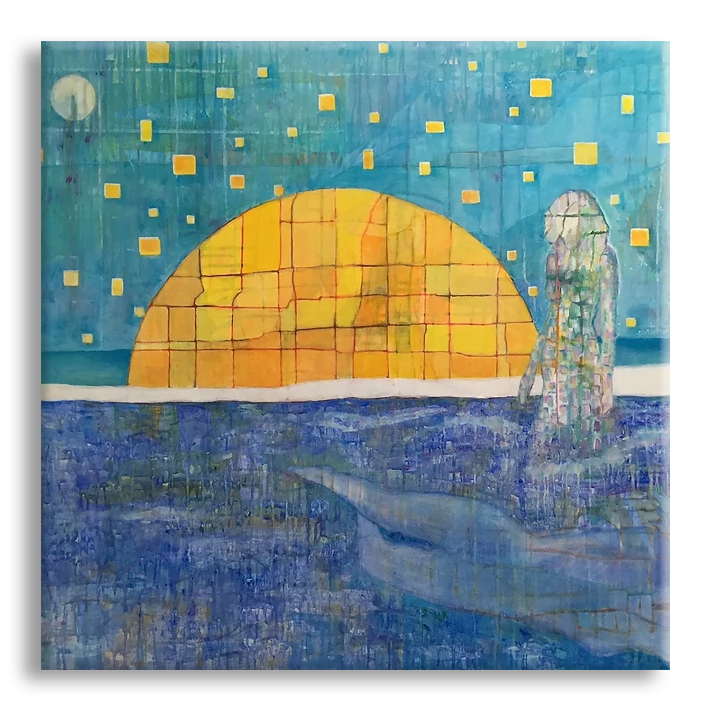
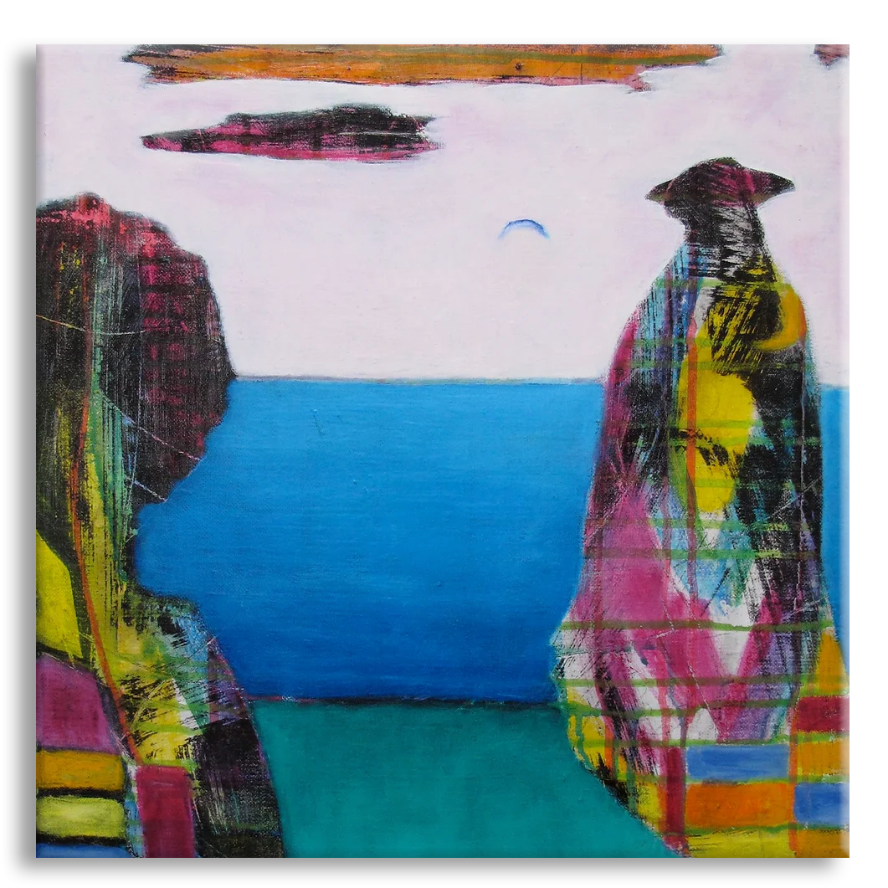
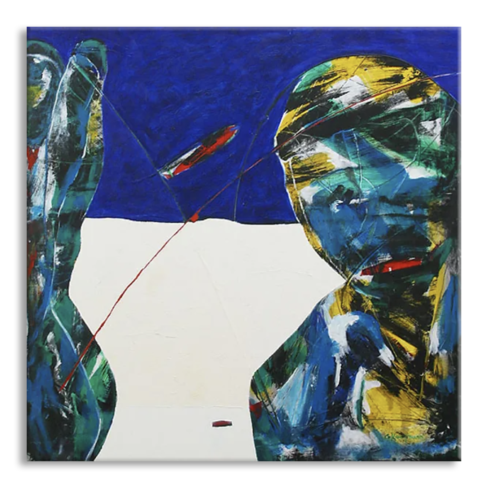

Collections
Dive into a selection of works where structure, relation and colour open spaces for reflection. Each piece offers traces of an artistic practice shaped by observation, movement and emotion.
STRUCTURES IN NET
From the maze of questions and impressions in the multidimensional world we are living in, I see patterns, structures, reproductions being systematically repeated. Words, actions, behaviours, thoughts.
REFLECTION OF MODERN LIFE
 SEE FULL COLLECTIONStructure by definition is the relation among elements. We all exist in a space of energy that gives structure to our life.
EXPLORING VITALITY IN RELATIONS
SEE FULL COLLECTIONFocus is essential and one should never be afraid of simple compositions. As long as the working method is based on spontaneity and is part of an experiment.
INFLUENCED BY COBRA
 SEE FULL COLLECTIONColour is a power and I’ve always insisted as an artist to express myself in a colourful way. It’s all about freedom in colour and form. You should focus and cultivate your childish instincts, such as spontaneity and impulse, rather than a bothering reproduction of the world around you.